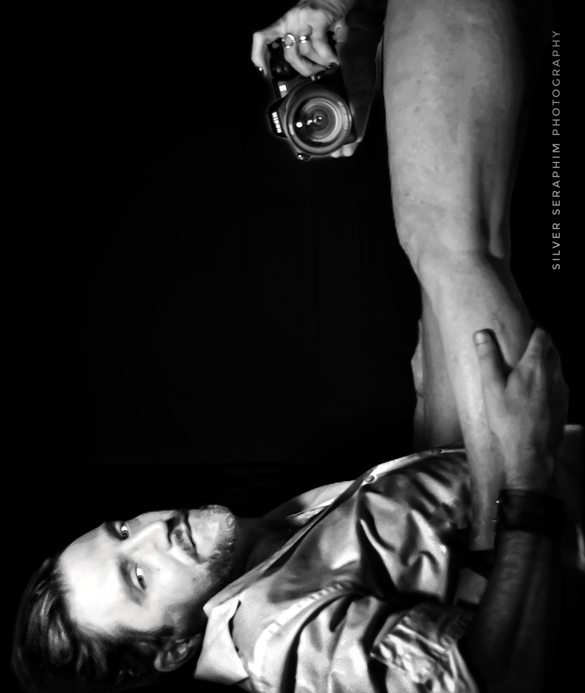

Projects
Bodies of work with something to say. Ongoing and personal projects — the images I make when the only brief is the truth I'm chasing.

Bodies of work with something to say. Ongoing and personal projects — the images I make when the only brief is the truth I'm chasing.
